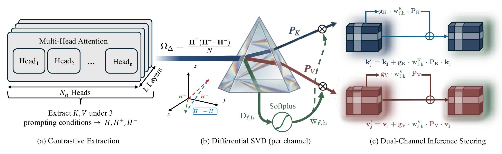

SVD of $\Omega_\Delta = \Omega^+ - \Omega^-$ extracts directions that distinguish relevant from irrelevant conditions, automatically eliminating shared variance.
Each attention head receives a continuous importance weight $w_{\ell,h} = \text{softplus}(D_{\ell,h} - \delta_{\min})$, replacing binary hard thresholds with smooth gradation.
Steers both Key (routing) and Value (content) channels simultaneously, enabling fine-grained control over information flow at inference time.
Using token-level key embeddings from synthetic contrastive prompts — denoted $\mathbf{h}$ (neutral), $\mathbf{h}^+$ (positive), and $\mathbf{h}^-$ (negative) — we compute cross-covariance matrices for each transformer layer $\ell$ and head $h$:
SVD is then applied: $\Omega^+_{\ell,h} = U^+ S^+ V^{+\top}$, $\Omega^-_{\ell,h} = U^- S^- V^{-\top}$. The projection matrices are constructed from the top singular vectors:
where $k^+$ and $k^-$ are chosen such that they capture at least a proportion $\gamma$ of the total singular value sum:
During inference, learned projections are injected into key embeddings before attention scores are computed. For each token key $\mathbf{k}_j \in \mathbb{R}^{d_k}$ at layer $\ell$ and head $h$:
where $g^+, g^-$ are independently adjustable scalars controlling positive and negative steering gains. This is algebraically equivalent to augmenting the attention score matrix $A$ with a low-rank relevance bias $B$:
Because the method operates entirely on key representations prior to attention computation, it requires no access to the attention matrix, making it inherently compatible with FlashAttention.
The adaptive variant maintains multiple domain-specific expert projections $\{U^+_{m,\ell,h}\}_{m=1}^M$ and routes them based on query alignment. At inference time, the query vector $\mathbf{q}_{\ell,h}$ of the last prompt token is used to compute dynamic coefficients:
The final projection is a weighted combination of expert projections:
The key transformation during inference becomes: $\mathbf{k}_j' = \mathbf{k}_j + g \cdot P_{\text{dyn},\ell,h}(\mathbf{q}_{\ell,h})\, \mathbf{k}_j$.
Steering is most effective when applied selectively to KV heads that are naturally sensitive to prompt relevance. For each layer $\ell$ and head $h$, the average per-token $\ell_2$ distance is:
Projection is applied only if $D_{\ell,h} \geq \delta_{\min}$, where $\delta_{\min}$ is a tunable threshold. Mid-to-late layers consistently show larger separation, aligning with recent findings on retrieval head localisation.